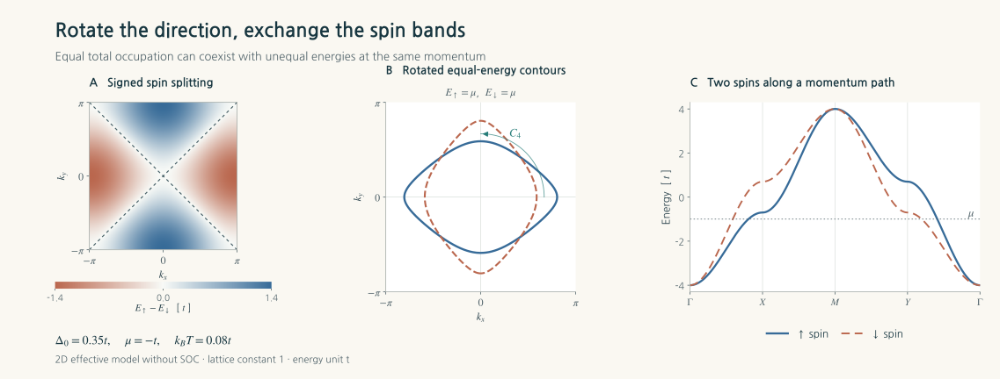
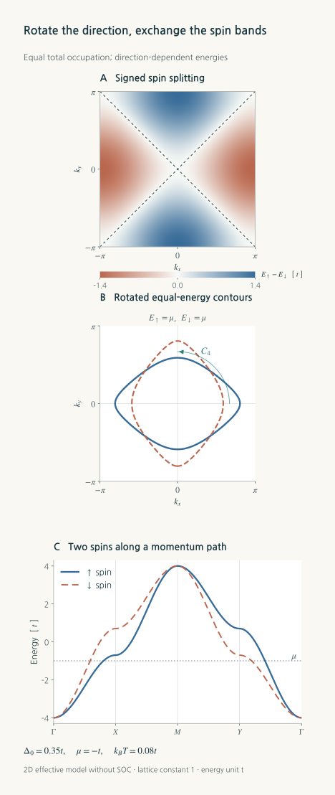
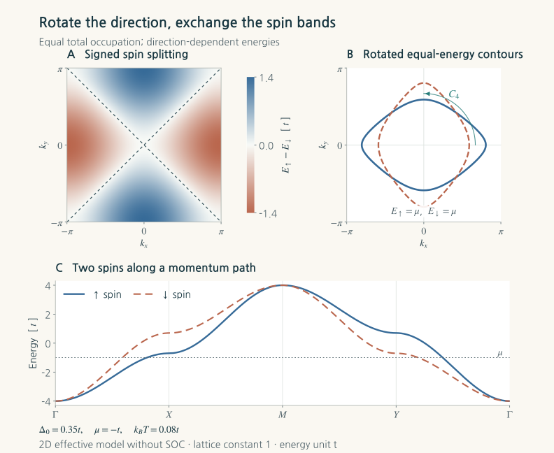
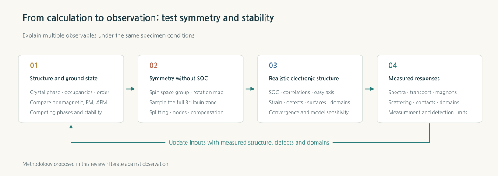
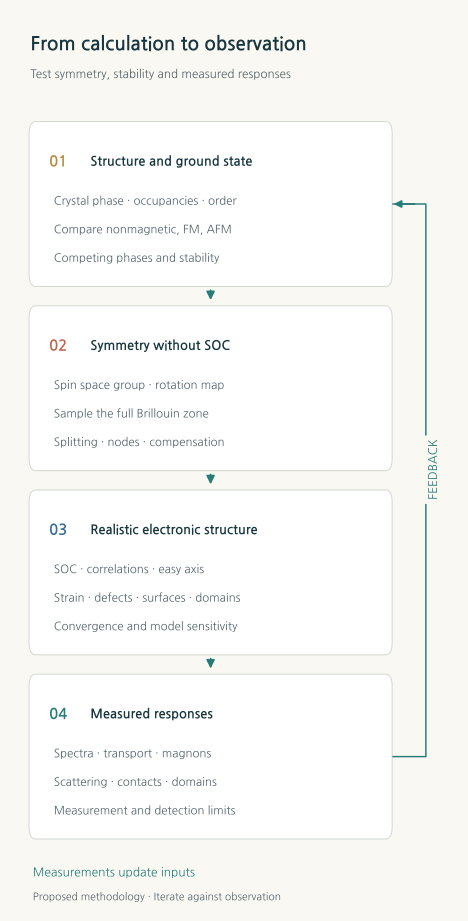
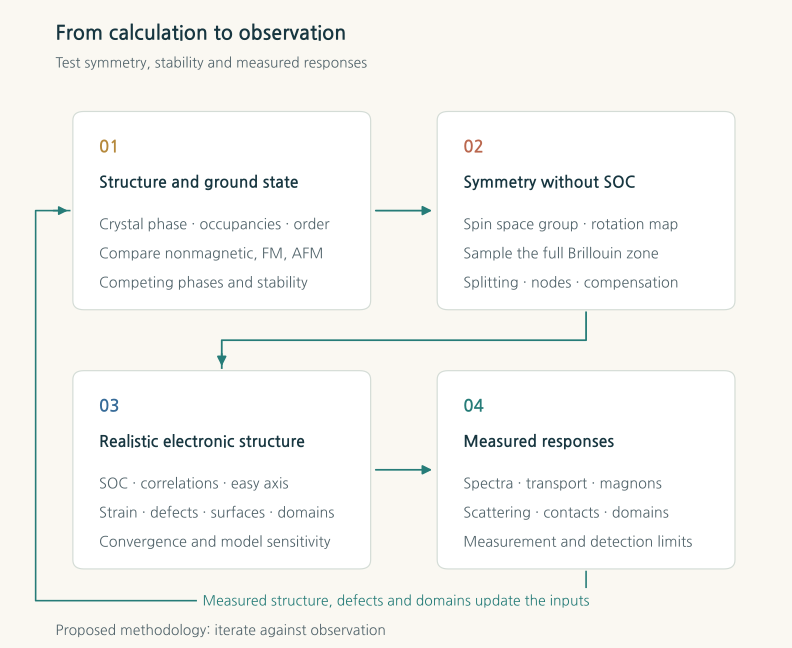

Altermagnetism: reading spin in crystals with compensated magnetization
From the symmetry of antiferromagnets to electronic bands, magnons and spin-injection devices
TECH REVIEW · 6 November 2026 · Condensed-matter physics · Computational materials science · Spintronics

Contents
- Diamagnetism and antiferromagnetism ask different questions
- What operation connects the opposing arrows?
- A small calculation: spin splitting with overall compensation
- What do d-wave and g-wave describe?
- Who discovered what—and when?
- Which part of magnetism does an experiment see?
- From electrons to collective oscillations
- What RuO₂ teaches about calculations and samples
- The first computational task is the magnetic ground state
- From an attractive band plot to an observable
- What spintronics hopes to gain
- Designing the next discovery through computation
- References
Can a material select the spins of flowing electrons while producing little external magnetic field? An experiment published in October 2026 used a nearly compensated Mn₅Si₃ film as a spin injector. At 100 K, reversing the film's magnetic state changed the spin signal recorded by a detector across a copper channel. A small sum of magnetic moments and a rich spin response of the current met within a single device.[3]
That scene offers a way into the excitement surrounding altermagnetism. In an introductory account of magnetism, we add the small arrows associated with atoms. Alignment gives ferromagnetism; opposing moments that cancel give antiferromagnetism. Electrons in a crystal, however, encounter more than the sum of those arrows. The directions in which atoms and ligands are arranged, and the way electron waves spread through that environment, also matter. Even when the local moments sum to zero, we must still ask what makes spin-up and spin-down states have the same energy at a particular momentum.
Altermagnetism answers that question through crystal symmetry. When a crystal rotation connects the environments of opposite spins, their bands can correspond at rotated momenta rather than at the same momentum. The sign of the splitting changes with direction, while the total remains compensated. It is a way of reading antiferromagnetic order in real space together with spin splitting in momentum space.[4]
Diamagnetism and antiferromagnetism ask different questions
Diamagnetism and antiferromagnetism describe different aspects of magnetism. Diamagnetism is a response in which an external magnetic field induces a small magnetization in the opposite direction. In the simple linear relation , the magnetic susceptibility is negative. Antiferromagnetism is a spontaneous order in which local magnetic moments align in opposing directions. A diamagnetic background response can also coexist with magnetic order in a material.
| Concept | What does it describe? | Typical behaviour or state |
|---|---|---|
| Diamagnetism | The response to an external field | An induced magnetization opposing the applied field |
| Paramagnetism | How an external field aligns moments | A response whose average magnetization vanishes without a field |
| Ferromagnetism | The ordered alignment of moments | Parallel alignment and a net magnetization |
| Compensated antiferromagnetism | How opposing local moments cancel | Antiparallel order and a small total magnetization |
| Altermagnetism | The symmetries that compensated order leaves in electronic states | Collinear compensated order and nonrelativistic spin splitting that alternates with direction |
For two sublattices with moments , their sum and difference  carry different information. The Néel order parameter can remain finite even when
carry different information. The Néel order parameter can remain finite even when  . Time reversal flips all the moments and reverses that order. A zero sum of magnetic moments does not, by itself, restore time-reversal symmetry.
. Time reversal flips all the moments and reverses that order. A zero sum of magnetic moments does not, by itself, restore time-reversal symmetry.
Within the broad classification of antiferromagnetism, an altermagnet is a symmetry-distinct kind of compensated collinear antiferromagnet. The expression “a third form of magnetism” emphasizes a classification by nonrelativistic spin symmetry. Here we focus on that collinear, compensated, nonrelativistic definition. In real materials, spin–orbit coupling can produce small canting angles and residual moments, whose magnitude and role must be measured separately.[4]
What operation connects the opposing arrows?
In representative textbook collinear antiferromagnets, translation or inversion relates the opposite-spin sublattices. Combining an appropriate spatial operation with a spin-flipping operation can connect the two spin states at the same momentum and protect their degeneracy. The combined action of inversion and time reversal,  , is an important example of such protection. The relevant symmetry has to be established for each crystal.
, is an important example of such protection. The relevant symmetry has to be established for each crystal.
In an altermagnet, we must also examine the orientation of the nonmagnetic atoms around each magnetic site. Imagine a local environment elongated horizontally at one site and vertically at the other. Translating one onto the other leaves the ligands misaligned: a rotation is needed to match them. Orbital overlap and electron hopping follow those directions. When exchange-driven spin selection combines with this crystal anisotropy, the spin favoured along one direction can differ from the spin favoured along another.[5][6]
In an approximation that neglects spin–orbit coupling (SOC), rotations in spin space and rotations of the crystal can be treated independently. Spin groups—and, more generally, spin space groups—describe these symmetries. If a spin-flipping operation combined with a crystal rotation is a symmetry, suitably matched bands can obey
Here is the wavevector labelling the momentum of a Bloch electron in the crystal. The equation connects “spin up in the rotated direction” with “spin down in the original direction.” It does not require  at a general . That is how a difference can survive in a selected direction while cancelling when all directions are combined.[4][7]
at a general . That is how a difference can survive in a selected direction while cancelling when all directions are combined.[4][7]
This principal band splitting can exist without SOC, hence the description “nonrelativistic.” In a real material, SOC fixes the direction of Néel order relative to the crystal, opens small gaps at crossings, mixes spins and generates some Hall and optical responses. Calculations that switch SOC off to understand symmetry complement calculations that restore it to predict observable responses.
A small calculation: spin splitting with overall compensation
A simple two-dimensional teaching model makes the relation explicit. Set the lattice constant to one and measure energy in units of the hopping amplitude .

The identity matrix is ,  is the Pauli matrix distinguishing the two spins, and sets the direction-dependent splitting. The energies are . Exchanging and
is the Pauli matrix distinguishing the two spins, and sets the direction-dependent splitting. The energies are . Exchanging and  reverses the sign of their difference; sending leaves it unchanged. Along the diagonals
reverses the sign of their difference; sending leaves it unchanged. Along the diagonals  , the two spins meet again.
, the two spins meet again.
The map below shows . Warm and cool regions identify which spin has the higher energy. The diagonals separating the colours are symmetry-imposed nodes. Comparing the X and Y directions in panel C shows how rotation exchanges the ordering of the two spin branches.



 . Uniform integration over the Brillouin zone gives equal occupations for the two spins at a common chemical potential
. Uniform integration over the Brillouin zone gives equal occupations for the two spins at a common chemical potential  and
and  . Calculations on 128×128, 256×256 and 512×512 grids check the rotation relation, inversion symmetry and diagonal nodes. A two-dimensional effective model calculated in code for this review.
. Calculations on 128×128, 256×256 and 512×512 grids check the rotation relation, inversion symmetry and diagonal nodes. A two-dimensional effective model calculated in code for this review.The equality of the two spin occupations is no numerical coincidence. Rotating the occupied spin-up region by 90 degrees maps it onto the occupied spin-down region. Integrating the same Fermi distribution over the full Brillouin zone therefore gives exactly equal numbers. A current, however, weights states by electron velocity, scattering and the direction of flow. Compensation of equilibrium occupations need not cancel every component of transport.
In this model, the spin eigenvectors do not rotate with momentum. Its Berry curvature is therefore zero, and the intrinsic charge anomalous Hall effect vanishes despite the spin-split bands. This simple result is useful for computational materials science: band splitting, spin current and charge Hall voltage are physical quantities that must each be calculated. Real materials add multiorbital wavefunctions, SOC and the structure of occupied states.
To examine the roles of local exchange and direction-dependent electron motion more closely, we can add two sublattices, A and B. Let denote Pauli matrices in sublattice space and set  . A further teaching model is
. A further teaching model is
![H_{\mathrm{sub}}=\epsilon_0I+t_0\tau_x+d f(\mathbf k)\tau_z+J\tau_z\sigma_z,
\qquad E_{s,\eta}=\epsilon_0+\eta\sqrt{t_0^2+[d f(\mathbf k)+sJ]^2}.](math_be7c521bd46f3a.svg)
Here mixes the sublattices,  describes the anisotropy of the mutually rotated environments, and is an exchange field with opposite signs on A and B. The spin is
describes the anisotropy of the mutually rotated environments, and is an exchange field with opposite signs on A and B. The spin is  , while
, while  labels the two energy branches produced by sublattice mixing. If
labels the two energy branches produced by sublattice mixing. If  , there is no spin difference. If , the two spin energies remain equal despite the opposing exchange fields. Both ingredients are needed to split the energies at a general momentum. Even this small matrix reveals why local antiparallel alignment alone is insufficient.
, there is no spin difference. If , the two spin energies remain equal despite the opposing exchange fields. Both ingredients are needed to split the energies at a general momentum. Even this small matrix reveals why local antiparallel alignment alone is insufficient.
What do d-wave and g-wave describe?
Classifying a direction-dependent, sign-changing quantity by angular symmetries such as spherical harmonics leads to the labels d-wave, g-wave and i-wave. Here these names describe the momentum dependence of spin splitting. They do not directly specify the occupancy of atomic d orbitals or the symmetry of superconducting Cooper pairs.
Figure 1 is a two-dimensional d-wave model. The structure widely discussed for MnTe and CrSb is three-dimensional and g-wave. With suitable coordinate axes, one symmetry-allowed low-order harmonic for CrSb has the form  . Its sign is unchanged when all momentum components are reversed, but changes under particular rotations or on crossing nodal planes. This expression reveals the symmetry near Γ; the periodic band dispersion throughout the crystal requires a separate calculation.[2]
. Its sign is unchanged when all momentum components are reversed, but changes under particular rotations or on crossing nodal planes. This expression reveals the symmetry near Γ; the periodic band dispersion throughout the crystal requires a separate calculation.[2]
The distinction directly affects experimental design. A path confined to a three-dimensional nodal plane may show none of the principal splitting found without SOC. Large splitting can emerge at a different  or along another rotational direction. Reporting “how far a band splits” therefore requires reporting which momentum was examined.
or along another rotational direction. Reporting “how far a band splits” therefore requires reporting which momentum was examined.
Who discovered what—and when?
The field did not begin suddenly on the day it acquired a name. Calculations first assembled clues; a classification then connected them through a common principle.
In 2016, Noda, Ohno and Nakamura reported momentum-dependent spin splitting in density-functional-theory (DFT) calculations of collinear antiferromagnetic MnO₂, analysing the differently oriented coordination environments and their symmetry. In 2019, Hayami, Yanagi and Kusunose developed a microscopic-model and multipole account of splitting without SOC. In 2020, Yuan and colleagues showed that large splitting was possible even in centrosymmetric antiferromagnets containing light elements.[5][6][8]
The 2022 Physical Review X paper by Šmejkal, Sinova and Jungwirth used combined spin and crystal rotations to distinguish ferromagnetism, conventional antiferromagnetism and altermagnetism, bringing alternating splitting and nodal structure into one framework. Its preprint appeared in 2021. The work marked an important point at which individual computational results became a family of materials and a set of experimental questions.[4]
Several pioneering experiments deserve to be read together as well. In January 2024, a Korean team led by Suyoung Lee reported electronic spectroscopy of MnTe films showing splitting that changed across the magnetic transition. Krempaský and colleagues later that year traced symmetry-selective splitting in MnTe in detail. Theoretical classification, band observation, direct spin analysis and domain imaging are distinct achievements.[9][10]
Which part of magnetism does an experiment see?
Angle-resolved photoemission spectroscopy (ARPES) measures the energies and directions of electrons released by light to read the occupied bands. Comparison with calculations helps identify where two branches split in momentum space. Spin-resolved ARPES adds a detector that measures spin components of the emitted electrons. Two peaks in spin-integrated ARPES and a directly spin-resolved signal convey different information.
Lee and colleagues reported a transition temperature of 267 K and splitting of up to approximately 370 meV in their MnTe film. That temperature belongs to that film's conditions. Krempaský and colleagues distinguished nonrelativistic nodal planes from regions away from them to explain the contributions of SOC and the principal splitting. Combining the different splitting scales reported for MnTe as though they were the same effect along the same path would obscure important physics.[9][10]
For CrSb, Reimers and colleagues compared soft-X-ray ARPES with calculations in 2024 and observed approximately 0.6 eV splitting along a selected path. In 2026, Long and colleagues rotated strong magnetic fields during low-temperature bulk quantum-oscillation measurements to trace the split Fermi surfaces and their g-wave nodal structure. Quantum oscillations are periodic responses produced when electron orbits become quantized in a magnetic field. Spectroscopy of electrons emitted at a surface and measurements of Fermi surfaces within a material help address one another's weaknesses.[1][2]
A further question concerns the domains present within a single sample. In their 2024 MnTe study, Amin and colleagues combined X-ray magnetic circular and linear dichroism with microscopy to image domains, domain walls and vortices, and to control their formation. Linear dichroism primarily probes the axis of the order, while an appropriate circular-dichroic measurement provides additional information about the magnetic state. Opposing domains can weaken a spatially averaged signal, making local imaging important for interpreting bands and transport as well.[11]
| Measurement | What it directly probes | Question for comparison with calculations |
|---|---|---|
| Magnetometry, neutron diffraction and μSR | Net moments, magnetic arrangements and local magnetic fields | Does the assumed magnetic order exist in the actual sample? |
| ARPES and spin-resolved ARPES | Electronic dispersion and the spin of emitted electrons | Do the directions, nodes and temperature dependence of the splitting follow the same symmetry? |
| Magnetic-dichroism microscopy | Domains and the spatial distribution of order | Which domain populations can account for the averaged signal? |
| Polarized neutrons and polarization-resolved RIXS | Energies and polarizations of collective spin excitations | How does the handedness of the two modes change with momentum? |
| Transport and nonlocal spin valves | Voltages, spin injection, propagation and detection | Do the electronic-structure properties survive real interfaces and scattering? |
From electrons to collective oscillations
A small disturbance to magnetic order makes neighbouring spins oscillate together. The quantum of this collective excitation is a magnon. Oscillations of the two sublattices can have opposite handedness, involving differences in precession direction and spin angular momentum. Altermagnetism raises questions about the directional dependence of these excitations as well as of electronic bands.
On 29 October 2026, Jost and colleagues reported the circular-polarization dependence of resonant inelastic X-ray scattering (CD-RIXS) from MnTe. The momentum dependence of the magnon polarization corresponded to a g-wave structure. The measurement connects excitation energies with the handedness of the spin dynamics.[12]
On the same day, Faure and colleagues used polarized neutron scattering from MnF₂ to analyse a small splitting and a chirality that reverses between modes. The case is particularly revealing. An earlier measurement in 2025 had not resolved altermagnetic magnon splitting, prompting discussion of the higher effective symmetry of the dominant exchange model. Much of the energy splitting revealed by the new measurement is explained by dipolar interactions. The splitting and the change in polarization sign must therefore be examined together.[13][14]
This also expands the role of computation. Beyond drawing the band splitting permitted by symmetry, calculations must include exchange, anisotropy and dipolar terms to predict scattering cross sections and polarization dependence, then account for instrumental resolution. They must explain how large a symmetry-allowed signal will be and which part of an observed signal is distinctive to the order.
What RuO₂ teaches about calculations and samples
RuO₂ was an early candidate that captured the appeal of the field and has become one of its most important tests. A 2017 neutron and DFT+U study proposed itinerant antiferromagnetic order. Predictions of Hall and spin transport, and interpretations of electronic spectroscopy, subsequently developed around that assumed structure. The candidate highlighted the importance of the crystal environment of nonmagnetic ligands for the response.[15][16]
Later measurements, however, supplied strong counterevidence. Hiraishi and colleagues did not find the expected spontaneous local magnetic fields in μSR. Keßler and colleagues compared bulk and film samples and analysed multiple scattering in neutron measurements. For their bulk samples and analysis model, the upper bound on the ordered moment was per Ru. Subsequent electronic spectroscopy also reported results inconsistent with the predicted altermagnetic splitting.[17][18][19]
Calculations revealed sensitivity as well. Smolyanyuk and colleagues analysed how magnetic order in stoichiometric RuO₂ depends on the Hubbard  , and how Ru vacancies may promote a magnetic state. A magnetic moment that converges after initializing a particular antiferromagnetic arrangement does not settle the energetic competition and modelling choices needed to identify the actual ground state.[20]
, and how Ru vacancies may promote a magnetic state. A magnetic moment that converges after initializing a particular antiferromagnetic arrangement does not settle the energetic competition and modelling choices needed to identify the actual ground state.[20]
Sample dependence adds another dimension. In 2026, a study reported a new spin texture in strained ultrathin RuO₂ films 2.7 nm thick. A relaxed bulk crystal and an ultrathin film with a strained interface are different computational inputs. The issue is to establish which magnetic states and signals arise for specified structures, defects, thicknesses and strains, rather than to cast a single vote on the chemical formula “RuO₂.”[21]
The first computational task is the magnetic ground state
Symmetry classification is powerful here, but its role is specific. It determines which properties are allowed for an assumed magnetic order. Whether a material actually chooses that order is a question of energy and stability.
Calculations begin with the crystal phase, atomic positions and occupancies, and the experimentally established magnetic structure. They compare nonmagnetic, ferromagnetic and several antiferromagnetic arrangements, adding larger cells and noncollinear or spin-spiral states where needed. They also check whether structural relaxation changes the initially assumed symmetry. A low electronic energy within a constrained magnetic arrangement must be distinguished from stability against all competing states.
The effects of the exchange–correlation functional and correlation corrections come next. DFT+U treats local electronic interactions statically, but the choices of , , projectors and double-counting correction can alter moments, gaps and relative energies. When dynamical correlations matter, approaches such as DFT combined with dynamical mean-field theory (DFT+DMFT) can describe temperature-dependent spectra and quasiparticle renormalization. A persuasive calculation seeks a parameter range that explains structure, spectroscopy and magnetic observations together, rather than choosing to produce the desired splitting.
Finite-temperature order presents a further task. Exchange constants and anisotropies can feed spin-wave calculations, Monte Carlo simulations and atomistic spin dynamics. In strongly itinerant systems, however, one must check whether a Heisenberg model of fixed-length moments is adequate. Long-wavelength fluctuations impede long-range order in a two-dimensional isotropic model. Film anisotropy, interlayer coupling and the substrate are essential inputs for this reason too.
From an attractive band plot to an observable
Once a stable candidate is obtained, spin-polarized calculations without SOC should survey the full Brillouin zone. A single high-symmetry path can miss the principal splitting if it lies on a node. Conversely, blindly subtracting bands with the same sorted index near a crossing can match branches whose orbital character has exchanged. Spin, orbital character and symmetry correspondence must be tracked together.
Restoring SOC gives the easy axis, magnetic anisotropy, small canting, avoided crossings and actual spin expectation values. Electrons may then cease to separate globally into pure spin-up and spin-down states. The chosen spin-projection axis must be specified when reading . Spin space groups without SOC and relativistic magnetic space groups supply the symmetry tools appropriate to their respective approximations.
Transport requires further information about wavefunctions, occupations, velocities and scattering. A representative expression for the intrinsic charge anomalous Hall conductivity integrates the Berry curvature of occupied states:
Here  is the occupation and is the Berry curvature, obtained from how the band eigenstates change with momentum. Remaining symmetries can forbid particular components, while large positive and negative contributions can cancel. Rapid variations near small SOC gaps require Wannier interpolation and dense integration grids, with convergence checks for the energy window and chemical potential. Tools such as WannierBerri make these calculations more efficient.[22]
is the occupation and is the Berry curvature, obtained from how the band eigenstates change with momentum. Remaining symmetries can forbid particular components, while large positive and negative contributions can cancel. Rapid variations near small SOC gaps require Wannier interpolation and dense integration grids, with convergence checks for the energy window and chemical potential. Tools such as WannierBerri make these calculations more efficient.[22]
A 2026 MnTe calculation by Chen and colleagues illustrates how this distinction informs materials design. They analysed cancellation of Berry-curvature contributions over a realistic hole-doping range and proposed using strain to change symmetry and enhance Hall and Nernst responses. Selecting a material with large band splitting and designing a useful response near the Fermi level are different optimization problems.[23]



Comparison with experiment must also model how observations are averaged. ARPES involves surface termination, photon energy, and transition matrix elements. Transport involves scattering, contacts, crystal orientation and domain populations. When ideal bulk bands disagree with experiment, computational science must work out which part of the discrepancy comes from structure, electronic correlations, surfaces or the averaging inherent in the measurement.
What spintronics hopes to gain
Generating a spin-polarized current while keeping net magnetization and stray fields small could reduce interference between neighbouring devices. This prospect brings together research on fast exchange-governed collective dynamics, direction-selective spin response, and electrical reading and writing of Néel states. It widens the options for spintronics, in which charge motion and the transmission of spin information can be designed differently.
González-Hernández and colleagues put forward a concrete first-principles proposal for a nonrelativistic spin splitter in 2021. Their calculation assumed magnetic order in RuO₂, so the proposed mechanism must be read alongside the current debate over that material's assignment.[24]
The Mn₅Si₃ experiment in the introduction brought the question into a physical device that injects, transports and detects spins. Direct determination of the collinear altermagnetic structure of those films remains a task, and symmetry and electronic-structure calculations contribute to its microscopic interpretation. What the result directly shows is that the spin-injection signal changes between time-reversed states of a compensated magnet.[3]
Interfaces also matter for electrical manipulation. Li and colleagues' PtTe₂/CrSb study uses proximity-induced interfacial moments and SOC. The representative current-induced reversal in the public author manuscript was measured at 170 K with a 30 mT assisting magnetic field. A real device adds the physics of interfaces, detection and writing to the compensated bulk order. Extending this performance to room-temperature operation without an assisting field requires further development of the junction and its control.[25]
Device assessment will require readout contrast, writing energy and error rate, retention, endurance, sample-to-sample reproducibility and thermal management at matched temperatures and bandwidths. Fast magnon modes make these goals attractive, but the speed of a complete memory cycle—including contacts and current pulses—must be measured in the device.
Designing the next discovery through computation
The questions open to computational scientists extend well beyond which material has the largest splitting. First, can several observables be explained under the same sample conditions? Fixing structure, defects and strain, then predicting bands, magnetic moments, domain orientation and the angular dependence of transport with one model reduces the freedom in its assumptions. The RuO₂ debate demonstrates the value of this joint test.
Second, does the desired transport signal survive averaging? Calculations can reverse and rotate Néel domains, change contact directions, carrier densities and scattering, and determine which symmetry components remain. Switching SOC on and off within the same structure, or removing exchange order as a control, can further isolate the origins of a signal.
Third, can stability become part of the criteria for selecting new materials? Gao and colleagues' AI search combined crystal graphs with first-principles and symmetry checks to propose 50 computational candidates. Such searches help narrow chemical space. Subsequent work must assess competition among magnetic arrangements, structural stability, sensitivity to correlation corrections, and realizable film and defect conditions. The number of candidates and the number of synthesized, experimentally verified materials are different measures.[26]
The physical significance of altermagnetism lies in recovering information hidden inside the number zero. States that look equally compensated when their magnetizations are summed can retain crystal order in the directions electrons travel and in the handedness of spin waves. Symmetry predicts that pattern; computation asks how large a signal it produces and where; experiment tests the correspondence in real samples. The present excitement comes from these three efforts advancing together—from electronic bands to collective excitations and currents in devices.
References
- [1]
S. Reimers, L. Odenbreit, L. Šmejkal, V. N. Strocov, P. Constantinou, A. B. Hellenes, R. Jaeschke Ubiergo, W. H. Campos, V. K. Bharadwaj, A. Chakraborty, T. Denneulin, W. Shi, R. E. Dunin-Borkowski, S. Das, M. Kläui, J. Sinova, and M. Jourdan, Direct observation of altermagnetic band splitting in CrSb thin films, Nat. Commun. 15, 2116 (2024).
- [2]
M. Long, T. I. Weinberger, Z. Wu, M. F. Hansen, R. Tao, M. Shrestha, D. Graf, Y. Skourski, F. M. Grosche, and A. G. Eaton, 3D bulk-resolved g-wave altermagnetic order parameter in CrSb, Nature 656, 854–860 (2026).
- [3]
J. Mencos et al., Time-reversal-symmetry-breaking spin injection from a compensated magnet, Nature 659, 69–75 (2026).
- [4]
L. Šmejkal, J. Sinova, and T. Jungwirth, Beyond conventional ferromagnetism and antiferromagnetism: A phase with nonrelativistic spin and crystal rotation symmetry, Phys. Rev. X 12, 031042 (2022).
- [5]
Y. Noda, K. Ohno, and S. Nakamura, Momentum-dependent band spin splitting in semiconducting MnO2: a density functional calculation, Phys. Chem. Chem. Phys. 18, 13294–13303 (2016).
- [6]
S. Hayami, Y. Yanagi, and H. Kusunose, Momentum-dependent spin splitting by collinear antiferromagnetic ordering, J. Phys. Soc. Jpn. 88, 123702 (2019).
- [7]
X. Chen, J. Ren, Y. Zhu, Y. Yu, A. Zhang, P. Liu, J. Li, Y. Liu, C. Li, and Q. Liu, Enumeration and representation theory of spin space groups, Phys. Rev. X 14, 031038 (2024).
- [8]
L.-D. Yuan, Z. Wang, J.-W. Luo, E. I. Rashba, and A. Zunger, Giant momentum-dependent spin splitting in centrosymmetric low-Z antiferromagnets, Phys. Rev. B 102, 014422 (2020).
- [9]
S. Lee, S. Lee, S. Jung, J. Jung, D. Kim, Y. Lee, B. Seok, J. Kim, B. G. Park, L. Šmejkal, C.-J. Kang, and C. Kim, Broken Kramers degeneracy in altermagnetic MnTe, Phys. Rev. Lett. 132, 036702 (2024).
- [10]
J. Krempaský et al., Altermagnetic lifting of Kramers spin degeneracy, Nature 626, 517–522 (2024).
- [11]
O. J. Amin et al., Nanoscale imaging and control of altermagnetism in MnTe, Nature 636, 348–353 (2024).
- [12]
D. Jost, R. B. Regmi, E. G. Lomeli, S. Sahel-Schackis, M. Scheufele, M. Neuhaus, R. Nickel, F. Yakhou, K. Kummer, N. B. Brookes, L. Shen, G. L. Dakovski, N. J. Ghimire, S. Geprägs, and M. F. Kling, Chiral altermagnon in MnTe, Science 394, 541–543 (2026).
- [13]
Q. Faure, D. Bounoua, V. Balédent, A. Gukasov, V. O. Garlea, A. Ribeiro, J. G. Rau, S. Petit, and P. McClarty, Altermagnetism revealed by polarized neutrons in MnF2, Science 394, 544–548 (2026).
- [14]
V. C. Morano, Z. Maesen, S. E. Nikitin, J. Lass, D. G. Mazzone, and O. Zaharko, Absence of altermagnetic magnon band splitting in MnF2, Phys. Rev. Lett. 134, 226702 (2025).
- [15]
T. Berlijn, P. C. Snijders, O. Delaire, H.-D. Zhou, T. A. Maier, H.-B. Cao, S.-X. Chi, M. Matsuda, Y. Wang, M. R. Koehler, P. R. C. Kent, and H. H. Weitering, Itinerant antiferromagnetism in RuO2, Phys. Rev. Lett. 118, 077201 (2017).
- [16]
L. Šmejkal, R. González-Hernández, T. Jungwirth, and J. Sinova, Crystal time-reversal symmetry breaking and spontaneous Hall effect in collinear antiferromagnets, Sci. Adv. 6, eaaz8809 (2020).
- [17]
M. Hiraishi, H. Okabe, A. Koda, R. Kadono, T. Muroi, D. Hirai, and Z. Hiroi, Nonmagnetic ground state in RuO2 revealed by muon spin rotation, Phys. Rev. Lett. 132, 166702 (2024).
- [18]
P. Keßler, L. Garcia-Gassull, A. Suter, T. Prokscha, Z. Salman, D. Khalyavin, P. Manuel, F. Orlandi, I. I. Mazin, R. Valentí, and S. Moser, Absence of magnetic order in RuO2: insights from μSR spectroscopy and neutron diffraction, npj Spintronics 2, 50 (2024).
- [19]
J. Liu et al., Absence of altermagnetic spin splitting character in rutile oxide RuO2, Phys. Rev. Lett. 133, 176401 (2024).
- [20]
A. Smolyanyuk, I. I. Mazin, L. Garcia-Gassull, and R. Valentí, Fragility of the magnetic order in the prototypical altermagnet RuO2, Phys. Rev. B 109, 134424 (2024).
- [21]
Y. Zhang et al., Observation of mirror-odd and mirror-even spin texture in ultrathin epitaxially strained RuO2 films, Sci. Adv. 12, eaec2917 (2026).
- [22]
S. S. Tsirkin, High performance Wannier interpolation of Berry curvature and related quantities with WannierBerri code, npj Comput. Mater. 7, 33 (2021).
- [23]
W. Chen, Z. Zhou, J. Meng, W. Wang, Y. Yang, and Z. Li, Strain engineering of the intrinsic anomalous Hall and Nernst effects in altermagnetic MnTe at realistic doping levels, Phys. Rev. B 114, L140405 (2026).
- [24]
R. González-Hernández, L. Šmejkal, K. Výborný, Y. Yahagi, J. Sinova, T. Jungwirth, and J. Železný, Efficient electrical spin splitter based on nonrelativistic collinear antiferromagnetism, Phys. Rev. Lett. 126, 127701 (2021).
- [25]
Z. Li, W. He, H. Bai, Y. Wang, A. J. Grutter, G. Shi, X. Zhang, C. Kinane, A. Caruana, H. R. Tan, Y. Pu, C. Zhang, Y. Wang, H. Park, A. Soumyanarayanan, L. Shen, and H. Yang, Electrical manipulation and detection of perpendicular altermagnetic order via a proximitized Dirac semimetal, Nat. Mater. (2026).
- [26]
Z.-F. Gao, S. Qu, B. Zeng, Y. Liu, J.-R. Wen, H. Sun, P.-J. Guo, and Z.-Y. Lu, AI-accelerated discovery of altermagnetic materials, Natl. Sci. Rev. 12, nwaf066 (2025).
Writing and verification
Hyun-Jung Kim is the responsible editor. This manuscript is an AI-assisted review prepared in response to the requested topic. The evidence cutoff is 6 November 2026. Original papers, public author manuscripts and publication metadata were compared, with measurement conditions distinguished between published versions and preprints. Where access to final full text, including Science articles, was restricted, the discussion stays within the abstracts and author manuscripts examined.
OpenAI Codex root integrated the writing, teaching calculation, cover and typesetting; altermagnet_pioneers reviewed principles, earlier work, major experiments and bibliography; altermagnet_computation reviewed symmetry, first-principles methods, correlations and transport; and altermagnet_repo_evidence reviewed experimental conditions and overlap with existing reviews. The exact model identifier was not retained. AI Tech Review Editorial Harness v2026.08 and the current scientific-explanation, writing-style, cover and APS citation guidelines were applied.
The effective model in Figure 1 and its sublattice extension were checked numerically and analytically. The work does not independently reproduce material-specific DFT, DMFT or experiments. The cover is an AI-generated watercolor concept informed by verified CrSb coordination and a g-wave sign model; the explanatory figures were made in code. Its redesign incorporated art direction by altermagnet_watercolor_art_director, structure and symmetry review by altermagnet_visual_physics, and visual-story review by altermagnet_visual_story_editor. A person's request for the topic and writing is distinct from sentence-by-sentence approval or a reader evaluation; the current record contains no such latter assessment. Calculation code, results and figure-specific source and production information are retained in the review's production materials.